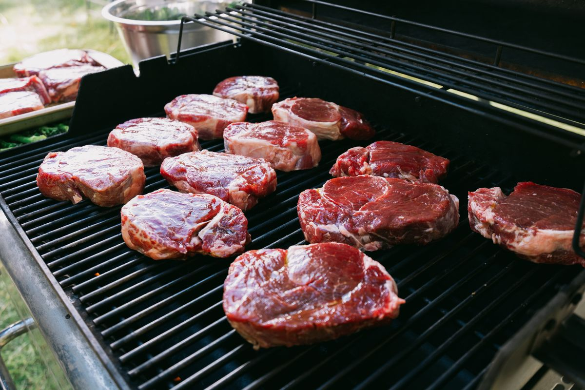
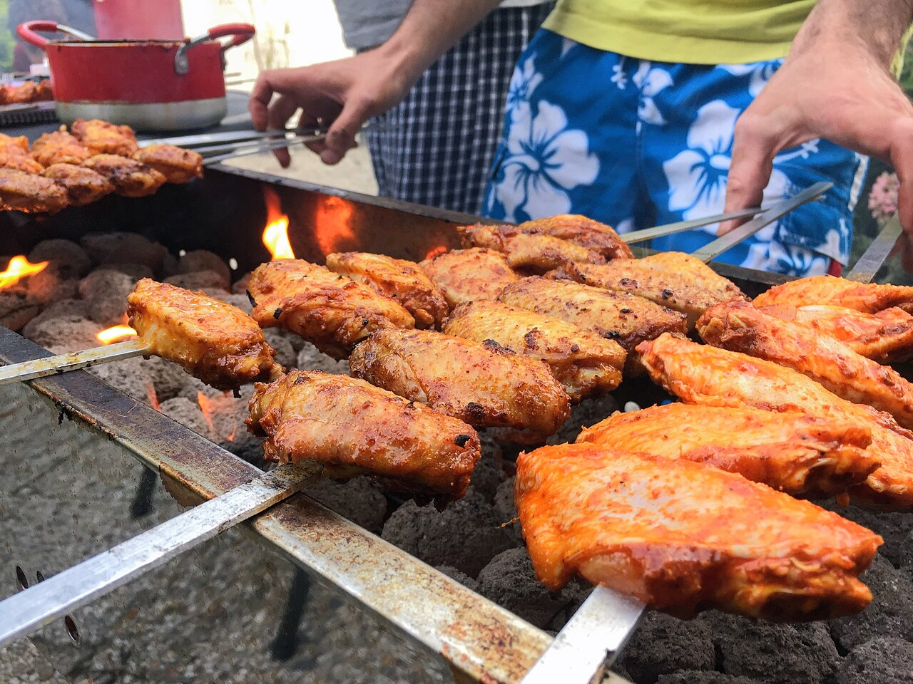
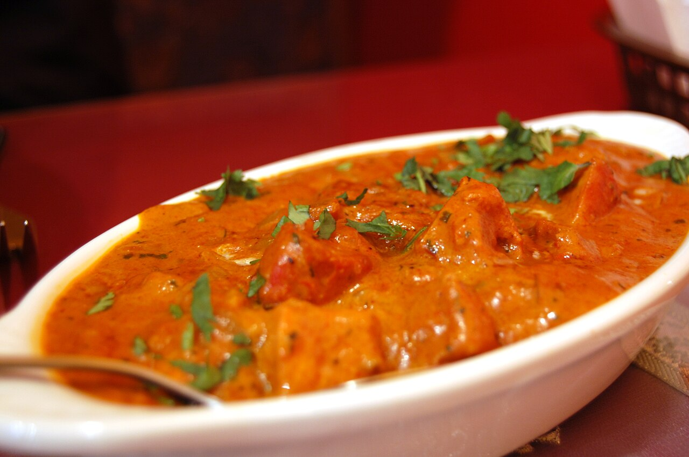
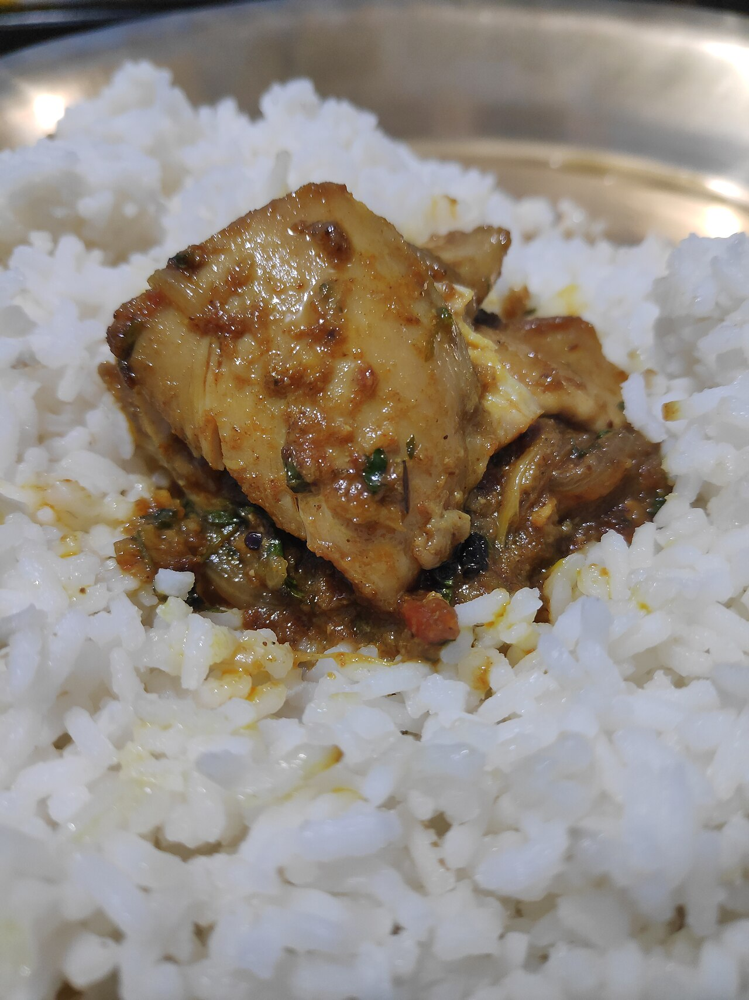
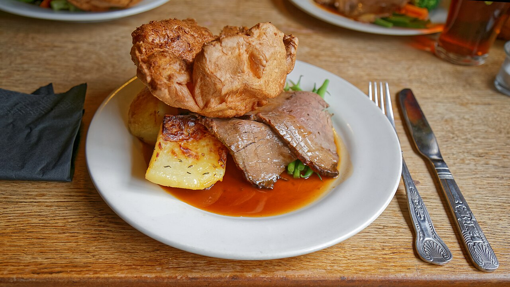
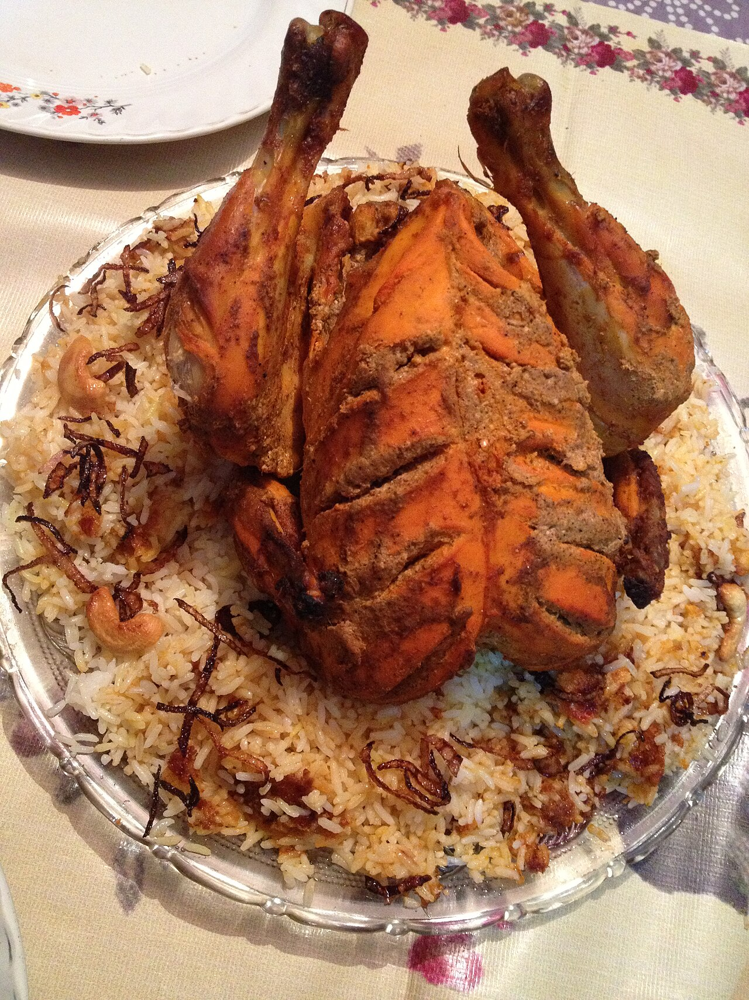
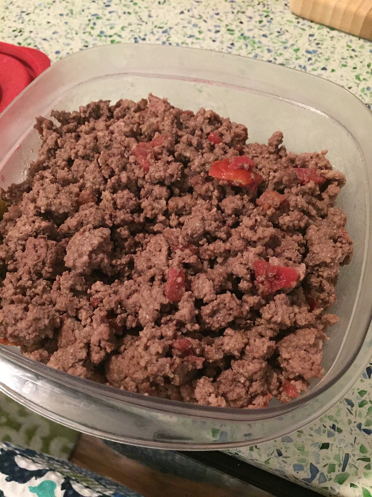
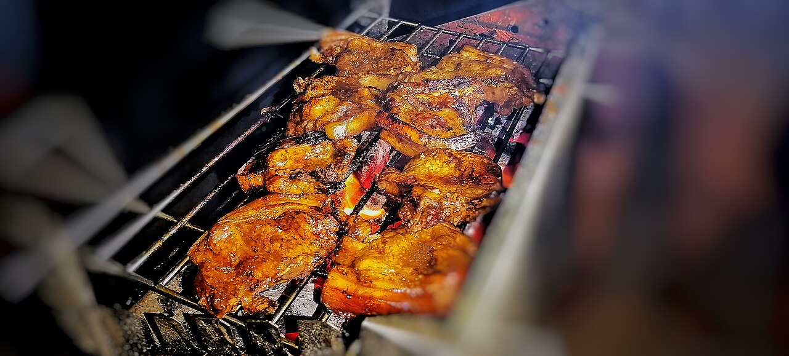

Grilling45 min
Flame-Grilled Ribeye
Thick-cut ribeye, rested and sliced. Request: Steak Cut · Thick.
Get This Cut
8 Guides • Grilling, Curries, Roasts & Quick Meals
Simple cooking guides matched to our cuts.
Pick a style below — each guide names the exact cut to request so the counter prepares it your way.
8 guides shown

Thick-cut ribeye, rested and sliced. Request: Steak Cut · Thick.
Get This Cut
Boneless cubes with peppers. Request: Boneless · Medium pieces.
Get This Cut
Even bone-in pieces for deep flavour. Request: Curry Cut · Bone-In.
Get This Cut
Curry-cut chicken that cooks fast. Request: Curry Cut · 1 kg.
Get This Cut

Cleaned whole bird, herb roasted. Request: Whole Chicken.
Get This Cut

5–10 minutes rest keeps steaks and chops juicy.
Curry cut for curries, thick cut for grills — texture matters.
Breast and sirloin dry fast — use medium heat, check early.
Refrigerate promptly and cook fresh cuts within a day or two.
Pick a recipe above, then request the exact cut from our butchers.